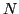

Next:
Standard map
Up:
info
Previous:
Modified Bernoulli map
2-dimansional maps
Subsections
Standard map
Piecewise linear map
Sharpen standard map
Truncated standard map
Quadratic standard map

-th order quadratic standard map
Kepler map
Generalized Kepler map
Baker map
Henon map
akaishi
2011-06-13